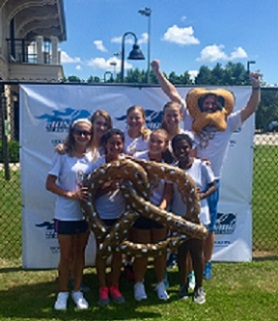

This summer, I had many experiences that have helped me to be the person that I am today. Right when summer started, I was out with my friends all day and night, just having fun. There were definitely some experiences that I regret, but there are a lot of memories that I wouldn't change for the world. My favorite memory from this summer was definitely when about 12 of my friends all spent the night at my friend's house, and we all just hung out. It was a simple night, but it was one of the best nights of my life.
I spent my summer in two different places, here in Greenville, South Carolina, and Syracuse, New York. I spent most of my summer in South Carolina, and it was one for the books. I went to Myrtle Beach three different times this summer, Florence, and here in Greenville. Personally I wouldn't have went to Myrtle because I don't like the beach, but I went because of my family. I went to Florence because my JTT tennis team had the state championship there. Finally I spent the remainder of the summer (besides New York, which I will get to in the next paragraph) in Greenville.
Along with South Carolina, I also spent my summer Syracuse, in New York. My family tries to go there as much as possible because we only moved here to Greenville two years ago. The first time we went up there, we went to a couple of family graduation parties. It was really fun to see everyone and everyone was glad to see us and how we were doing. The second time we went up there was unexpected because my grandmother had suddenly passed away. That was a really dark time for my family and we are glad that she is in a better place. Overall, this summer definitely had it's ups and downs, but I wouldn't change it for the world.
